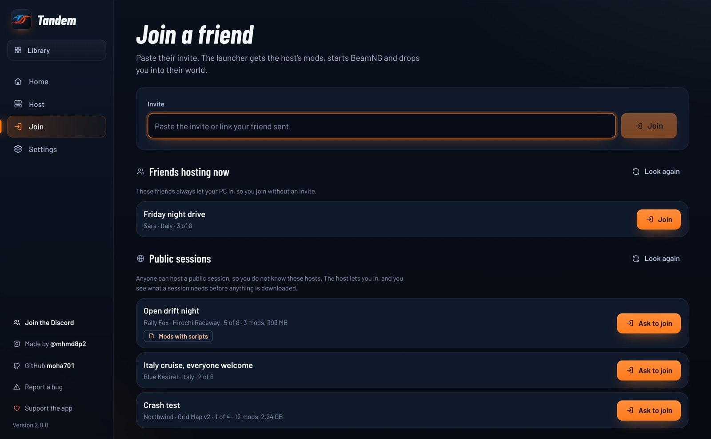
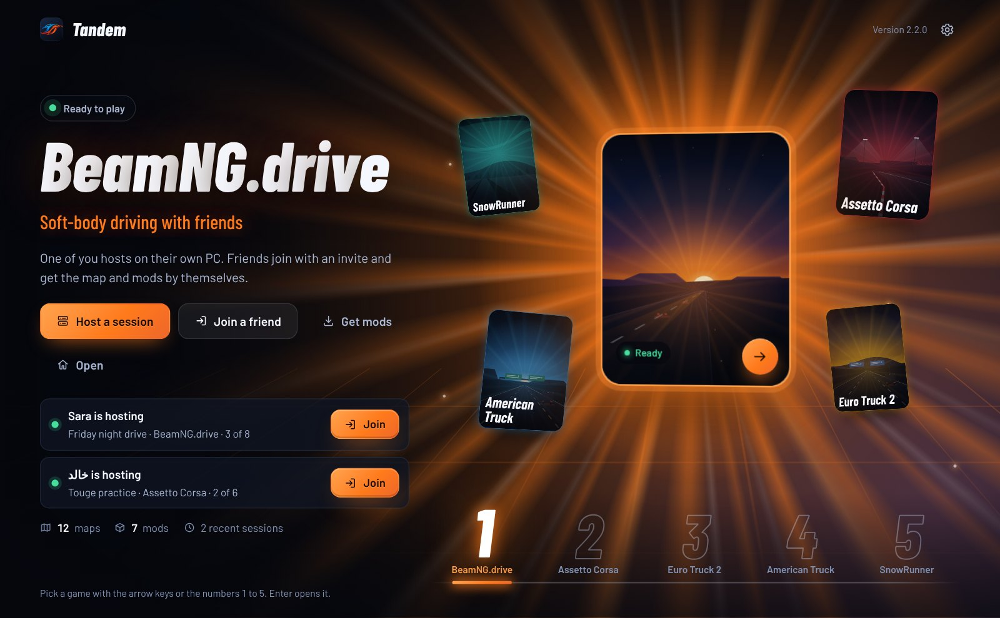
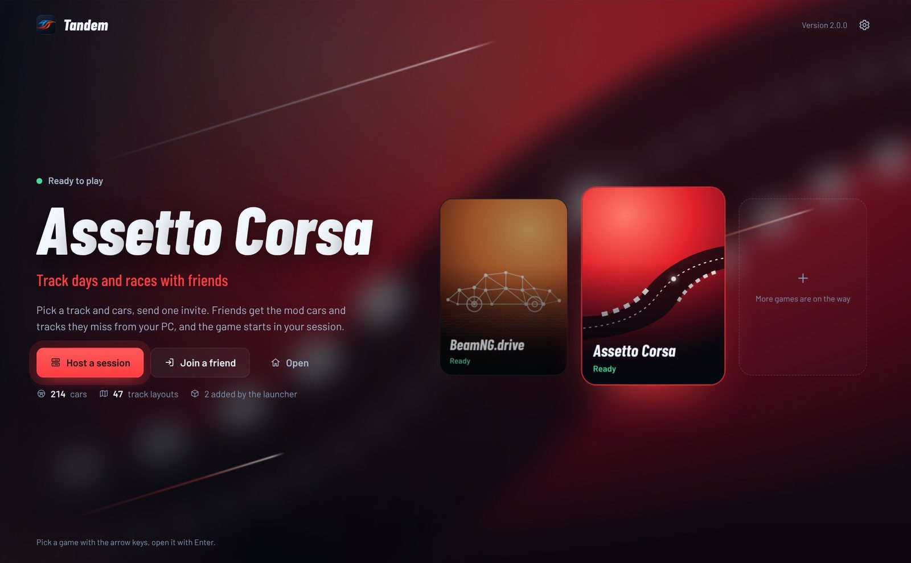
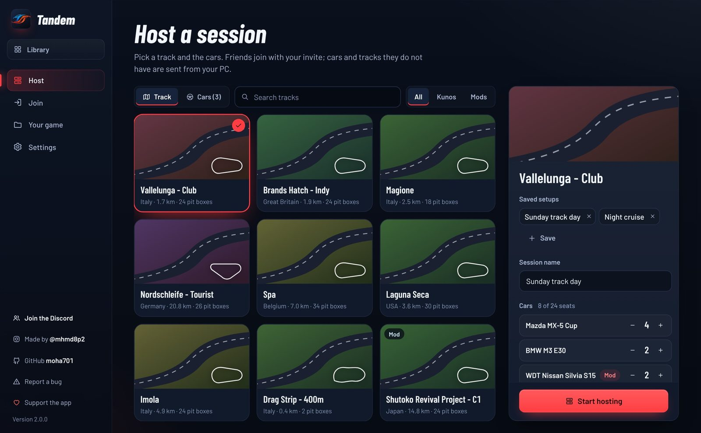

BeamNG.drive
Soft-body driving with friends
Smooth friends’ cars, crashes that look the same on every screen, shared traffic, weather and trailers.
Host BeamNG.drive and Assetto Corsa sessions from your own PC. Friends join with one invite, and Tandem brings them the maps and mods they’re missing.


Pick a game in the library, then host or join. Everyone needs their own copy of the game.

Smooth friends’ cars, crashes that look the same on every screen, shared traffic, weather and trailers.

Practice, qualifying and races with live lap times, chat and host controls. Mod cars and tracks are sent for you.
You and your friends each need Tandem and your own copy of the game.
Pick a game, a map and the mods to share, then send the invite.
You press Allow. Tandem gets their mods, starts the game and drops them into your world.
Games to play together, started by the host from the friends list in the game.
Drag races, point to point and laps. One countdown for everyone and a results board at the end.
Most drift points, more points the closer you drift to a friend, the last car still moving, or don’t be “it”. The host picks, everyone plays.
Go to a friend, watch them drive, follow the arrows to friends you can’t see, or hide a player’s car on your screen.
One press and you drive the same car, with the same parts and paint. Open a door or the hood, and your friends see it too.
Cruise, race, drift, off-road or derby. Filter the public list, or plan a session and get a reminder.
Results after every part of the session, and new cars without ending it.
A welcome message, votes to remove a player, and a filter for bad words in chat.
Hours, kilometres and games won, and your own card to share as a picture.
Everything that changed since version 1.0.10.
Friends you always let in see when you host and join with one click. No invite to copy.
Host from your own PC. Mod cars and tracks a friend doesn’t have are sent from your PC and added after they say yes.
Your profile shows the game, the map and the player count, with a Join button for friends.
Show a session to everyone. Players find it under Public sessions and ask to join. You still allow each one.
Open a mod site from Tandem. The ZIP you download goes into the right game, and you can take it out again.
Seconds after you start hosting, Tandem checks from the internet whether friends can reach your PC.
A player you block never gets into your sessions again, in either game.
English, Arabic and eleven more languages.
BeamNG Friends Launcher is now Tandem. The new look stops its motion while you play, so it never costs FPS.
What you get every time you drive together.
Friends get the host’s map and mods. Files they already have are never downloaded twice.
Cars follow their real position with gentle physics instead of jumping.
When a friend crashes, the same parts bend on every screen.
The host’s AI traffic drives on everyone’s screen.
Everyone gets the host’s time of day, fog, rain and wind.
Talk in the launcher and in a small chat window inside the game.
Reconnects after a short drop and brings you back after a crash without asking the host again.
One switch makes sessions lighter for slower PCs.
Your PC, your game and your sessions stay yours.
Tandem installs an update only if it is signed with the developer’s key.
Nobody gets in until you press Allow. Block a player or lock the session at any time.
Nothing in your game is replaced, and every addition can be taken out again.
Each PC has its own key, so there is nothing to sign up for.
Yes. Tandem is free. If you like it, you can support the developer.
Yes. Everyone needs Tandem, the same version, and their own copy of the game.
BeamNG.drive and Assetto Corsa, the PC versions on Steam.
No. Tandem starts BeamNG with a folder of its own. In Assetto Corsa it only adds mod cars and tracks after you say yes, and it never sends Kunos content between players.
A BeamNG.drive session holds up to 20 players: you and 19 friends.
Usually not. Tandem links your friends’ PCs by itself and checks whether they can reach you. In the rare case that both routers block it, the app explains what to do.
A first Linux version exists and is still being tested. Windows 10 and 11 are fully supported.
No. Tandem is made by mhmd8p, a player, and is not affiliated with BeamNG GmbH or Kunos Simulazioni.
Press Report a bug in the app. It saves a report without your invites or passwords and opens the community Discord.
Find people to drive with, get help, and see what’s coming next.
Download Tandem, send your friends this page, and pick a map.